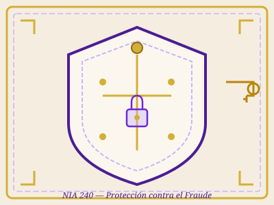

NIA 240 — Responsabilidades del Auditor con Respecto al Fraude
ISA 240: The Auditor's Responsibilities Relating to Fraud
Introducción y Objetivo
Objetivo de la norma: El objetivo del auditor es obtener una seguridad razonable de que los estados financieros están libres de incorrecciones materiales por fraude o error, y tomar medidas cuando exista sospecha de fraude.
La NIA 240 establece la distinción fundamental entre fraude y error, define las responsabilidades de la dirección y del auditor, y establece los procedimientos para evaluar y responder a los riesgos de incorrección material debida a fraude.
⚠️ Nota sobre versión revisada: En julio de 2025, el IAASB aprobó una versión revisada que entrará en vigor para periodos que inicien a partir del 15 de diciembre de 2026. Incluye un "lente de fraude" explícito y mayor alineación con la NIA 570 revisada.

Responsabilidades del Auditor con Respecto al Fraude
Alcance y Aplicación
Alcance: Esta norma se aplica a todas las auditorías de estados financieros realizadas conforme a las NIA.
Distribución de Responsabilidades
Dirección y Gobierno
- Responsabilidad PRIMARIA por prevención y detección
- Establecer entorno de control eficaz
- Fomentar cultura de honestidad
Auditor
- Obtener SEGURIDAD RAZONABLE
- Mantener ESCÉPTICISMO PROFESIONAL
- Evaluar y responder a riesgos
Definiciones Clave
Fraude
Acto intencional que implica el uso de engaño. Se manifiesta como:
- Información financiera fraudulenta: Manipulación deliberada de registros.
- Apropiación indebida de activos: Robo de activos de la entidad.
Error
Declaración errónea NO intencional en los estados financieros. Puede ser omisión, distorsión cuantitativa, error de cálculo o incorrecta interpretación de hechos.
Incorrección Material
Omisión o distorsión que puede influir en decisiones económicas de usuarios.
Escepticismo Profesional
Actitud con mente inquisitiva y evaluación crítica de la evidencia.
Seguridad Razonable
Nivel alto pero no absoluto de seguridad, obtenido mediante evidencia suficiente.
Control Interno
Procesos para proporcionar garantía razonable sobre consecución de objetivos.
Requerimientos Principales
1. Escepticismo Profesional
Mantener escepticismo durante toda la auditoría, reconociendo posibles circunstancias de fraude.
2. Evaluación del Riesgo
- Inquirir a la dirección y otros sobre riesgos de fraude.
- Identificar factores de riesgo de fraude.
- Tratar riesgos como significativos.
3. Respuesta a los Riesgos
- Respuestas generales: Asignar personas con experiencia, supervisión, elementos de sorpresa.
- Procedimientos específicos: Probar partidas de diario, revisar estimaciones, evaluar transacciones inusuales.
4. Comunicación
- Comunicar indicaciones significativas de fraude a la dirección.
- Comunicar indicaciones de fraude por parte de la dirección al gobierno.
Audio Resumen
Reproduce el resumen en audio de la NIA 240.
📜 Guion del Audio:
NIA 240, Responsabilidades del Auditor con Respecto al Fraude. Esta norma establece la distinción fundamental entre fraude y error. El fraude son actos intencionales que implican el uso de engaño, mientras que el error son declaraciones erróneas no intencionales. La NIA 240 identifica dos tipos principales de fraude: información financiera fraudulenta, que implica la manipulación deliberada de registros, y apropiación indebida de activos, que incluye el robo de efectivo, inventario u otros activos. La responsabilidad PRIMARIA para la prevención y detección del fraude recae en la dirección y los responsables del gobierno de la entidad. El auditor tiene la responsabilidad de obtener una SEGURIDAD RAZONABLE de que los estados financieros están libres de incorrecciones materiales, manteniendo una actitud de ESCÉPTICISMO PROFESIONAL. La norma exige que el auditor evalúe los riesgos de incorrección material debida a fraude y diseñe procedimientos que respondan a dichos riesgos. En julio de 2025, el IAASB aprobó una versión revisada que entrará en vigor a partir del 15 de diciembre de 2026.
Fuentes y Bibliografía
- IAASB. International Standard on Auditing 240: The Auditor's Responsibilities Relating to Fraud. IFAC, 2023.
- IAASB. ISA 240 (Revised): Auditor's Responsibilities Relating to Fraud. Vigente desde 15 diciembre 2026.
- IAASB. Handbook of International Quality Control, Auditing, Review, Other Assurance, and Related Services Pronouncements. IFAC, 2022.
- Federación Internacional de Contadores (IFAC). Normas Internacionales de Auditoría. www.ifac.org